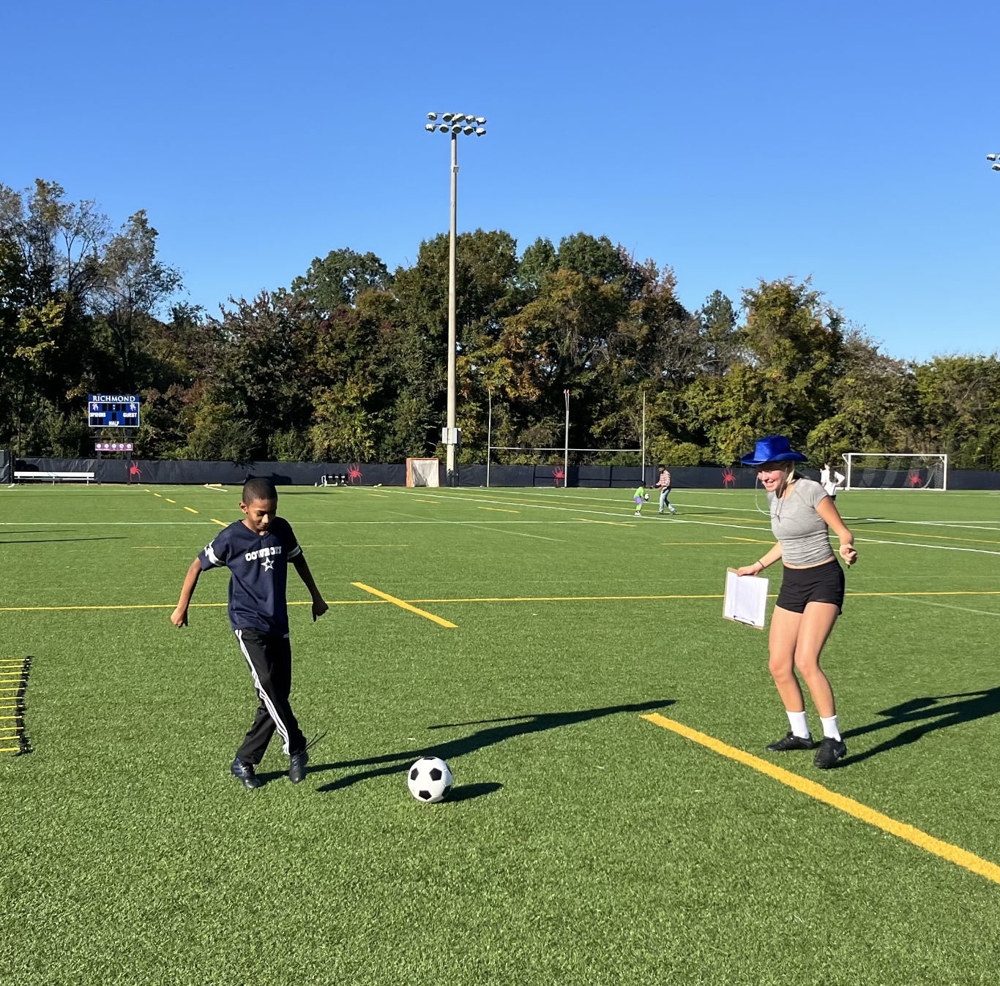
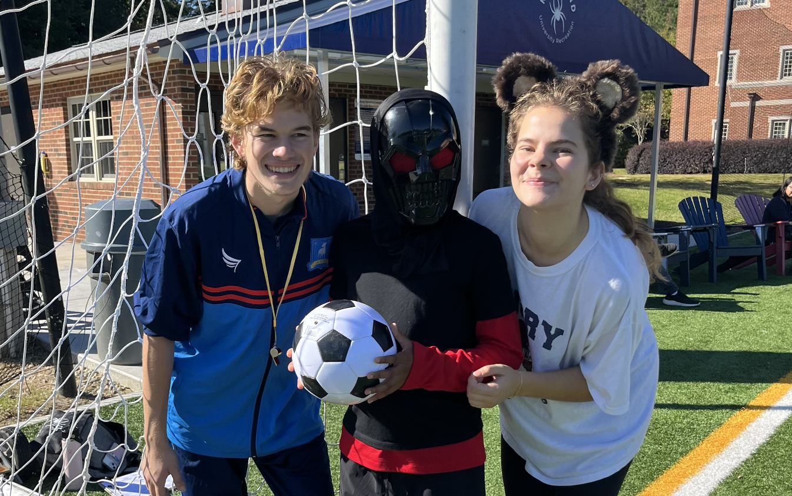
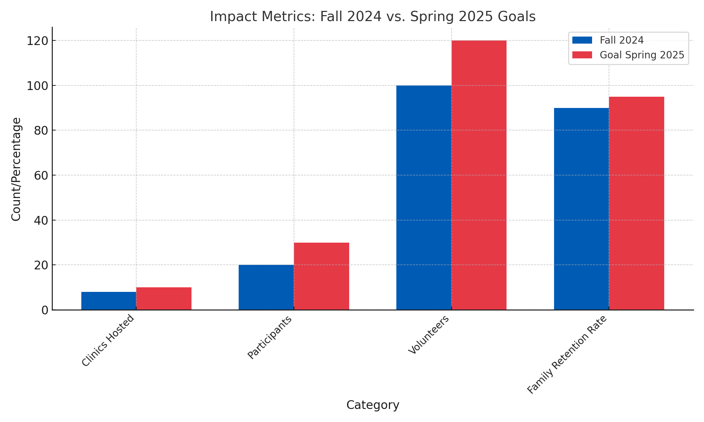

Our work
Clinics, classrooms, and the people in them.
Photos from BridgED so far — soccer clinics, volunteer days, and the team that showed up. Leave the open slots for new pictures; swap the file names in this page when you add them to the images folder.






Add a photo from a school workshop
Add a photo from the next clinic
Add a photo of volunteers in action
Fall 2024 → Spring 2025
The numbers we are aiming at next.
We hosted eight clinics in Fall 2024, with 20 participants, 100 volunteers, and a 90% family retention rate. Spring 2025 targets are 10 clinics, 30 participants, 120 volunteers, and 95% retention.
